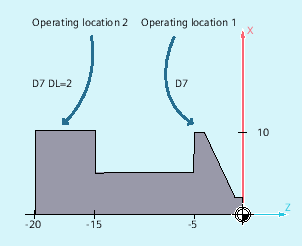

Additive offsets can be considered as process offsets that can be programmed in the machining. They refer to the geometrical data of a cutting edge and are therefore a component of tool cutting data.
Data of an additive offset is addressed using a DL number (DL: Locationdependent; offsets regarding the location of use) and entered via the user interface.
Dimension errors caused be the location of use can be compensated using additive offsets.
| Command to activate an additive offset |
| The additive tool offset data to be activated is specified using the |
| Note |
The machine data is used to define the number of additive offsets and also activate them (→ carefully observe the machine OEM's data!). |
The same cutting edge is used for two bearing seats:
| Program code | Comment |
|---|---|
| N110 T7 D7 | ; The revolver is positioned to location 7. D7 and DL=1 are activated and moved through in the next block. |
| N120 G0 X10 Z1 | |
| N130 G1 Z-6 | |
| N140 G0 DL=2 Z-14 | ; DL=2 is activated in addition to D7 and is moved through in the next block. |
| N150 G1 Z-21 | |
| N160 G0 X200 Z200 | ; Approach tool change point. |
| ... |
See also:
Specify wear and setup values ($TC_SCPxy[t,d], $TC_ECPxy[t,d])
Delete additive offsets (DELDL)